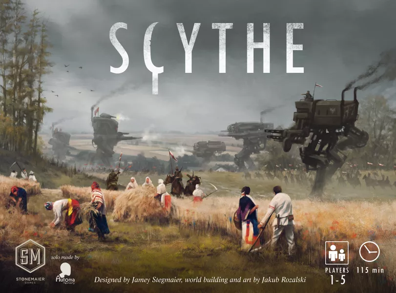
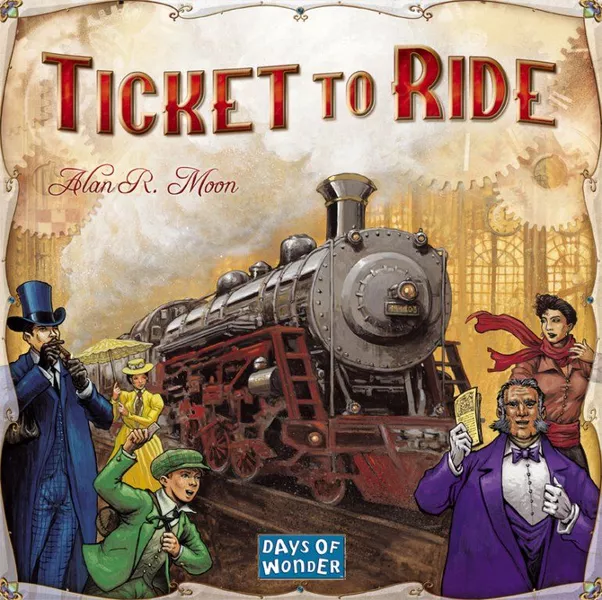
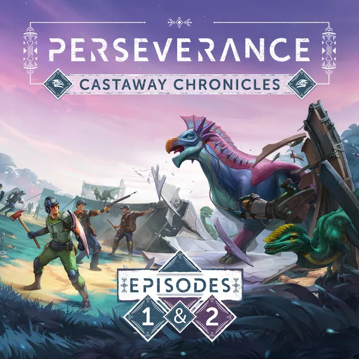
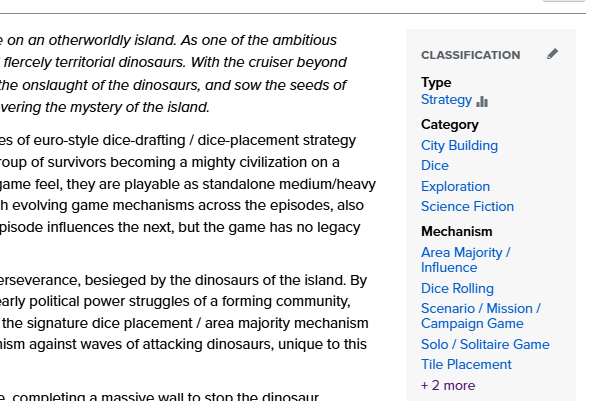
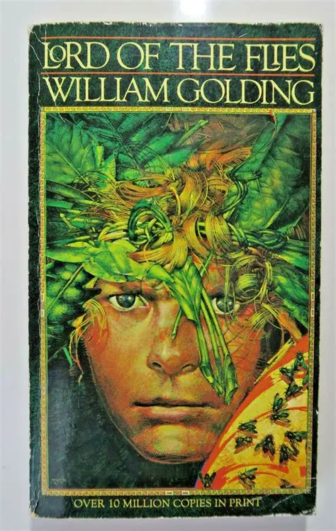
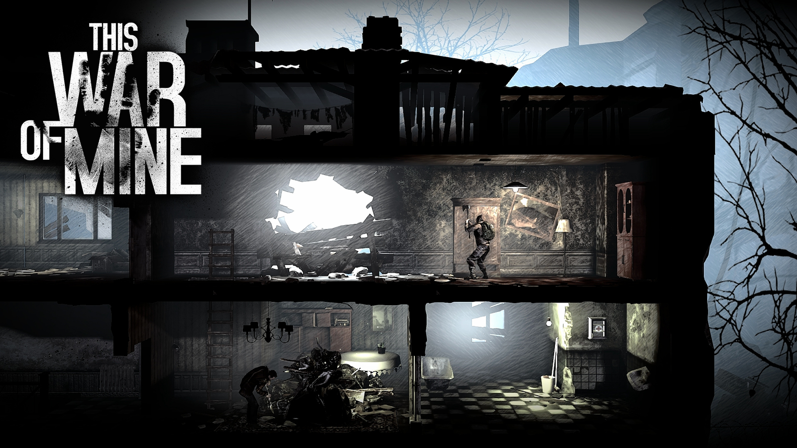
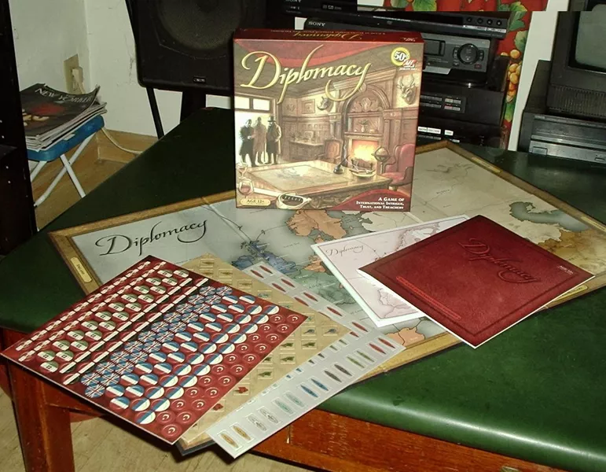
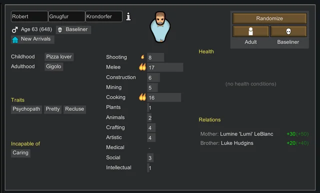
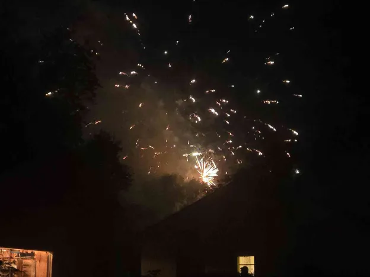

I've given up hope on board games having good themes.
(12 min. read)
I once believed in romantic game designers. Maybe a part of me still does; passionate nerds breathing life in experiences using nothing but well crafted mechanics and dreams. Think about the old war gamers sitting and imaginging how best to represent line of sight, moral, and fog of war. Imagine the creator of Monopoly crafting just the right mechanic to sell their thesis. Say what you will about the game's politics, but it does demonstrate unrestrained Capitalism swallowing up competators until only one person remains. (And the game was even more effective before Parker Brothers removed a bunch of rules from it.)
There are still some designers continuing this noble work, but they are a dying breed. This saddens me, because the designers taking their place I wouldnt even call game designers at all, to me they more closely resemble con-artists; taking mediocre games and applying some nonsense theme to trick the gaming public into buying it. And of course what makes them con-artists is that after gamers have bought their game they bring it home and play it to discover the game plays nothing like the theme or box advertised. Many games with the greatest art direction can also have the most ill fitting themes.



There is hope though. Look at thay last game, Perseverance. That box art is like yelling from the rootop “Hey! Anyone want a thematic game! I'm right here!" It's got dinosaurs, good art, and it calls all its different versions "episodes".

This game is Castaway meets Jurassic Park: a group of colonists crash landed on a dangerous planet, now they are trying to survive. This game details the early days of the colony, with dreams of one day building a rocket to get off this rock! That is what I call a cool theme, and it comes from an experienced team of designers, plus its high production values, this game has lots of potential. In fact the premise alone has my mind racing with ideas. Personally, if I got this assignment here are my ideas for games.

The inciting incident here is a crash landing, I bet the survivors won’t get along. I bet they even hate each other. This could be a social game about whether the survivors will come together to flourish or devolve into infighting. Everyone needs to come together and negotiate a compromise where every player has their own goals like a model UN meets Lord of the Flies. Even if this isnt a pure negotiation game we could have asymmetric player goals in a more standard game.

Another potential option is going hard-core of the survival, with lots of hard choices. When we run out of food, who gets it first? Do we risk the whole colony to try and get medicine for one sick child? What happens when we discover another group of humans that might be dangerous? The name of the game here is every option feels bad. This is a bad situation; we just need to make the best of it. And every decision has a gaint mounting question: how many more people will have to die to keep the rest of us alive.

Credit to @super_fish on BoardGameGeek
What if we take the survival of the colony as a given? Everyone here is good enough at thier jobs the colony will be fine, but who is going to be the one on top? We crank up the politics to make this dinosaur Game of Thrones. How will you manipulate the other players? How will you avoid being manupulated yourself? Where will alliances form and break?

Of course we could throw all those ideas out and go more in a management sim direction. We give every colonist their own stats and some strengths/weaknesses. Every player draws their statting colonists out of a giant deck and its all about using the people you have as best as possible. You have a cook so they are in charge of meals, and a scientist who van research new technology, but what about constructing houses? You dont have anyone good at that so who do you pull away to do it anyway? What do you do if two colonists don’t get along? What do you do when one colonist is in love with another? I think theres a lot of potential here for fun management decisions and a story to be told with all these random elements.
These are just options though, I’m curious about what the designers came up with.
It’s a worker placement game… About getting victory points… You're kidding me rignt? This is game just about maximizing your amount of victory points over a given number of turns?
Moment-to-moment in this game you analyze what spaces will give you the most points, and whether one of your opponents wants to block that space from you. Moment-to-moment you’re not thinking about how dangerous the world is, or which colonist is right for the job, or how to manipulate your opponents. Its a game about efficiency. Ok, not a great start, but games like this have surprised me in the past. And some of the most interesting designs come from unexpected places. Maybe the designers know something I don't, lets look closer at those mechanics.
Ok this sounds like a really cool mechanic. The colony needs to defend itself against dinosaur attacks, and if the dinosaurs break through buildings get destroyed and civilians get eaten. Thats bad, we must defend the colony! But whats even cooler is when you realize you cna cause the stampedes intentionally to destroy your opponent’s pieces. Imagine a game about building a colony, but everyone is secretly killing each other using this stampede mechanic. That's very evocative, almost Game of Thrones-y.
I hate to say the designers fumbled this potentially cool mechanic. You see, if the dinosaurs actually kill anyone, the person who caused the stampede loses a chunk of points. The point loss both discourages Machiavellian schemes to constantly beat down your opponents, but the point loss isn’t backbreaking either where it’s a punishment for poor play. Instead, killing people with the stampedes is sometimes worth it. If the boardstate is just right, then it’s worth doing. This places the decision in this weird middle point where we’ve avoided two actually cool stories: those being the incompetent leaders who killed their own people, and the evil bastards killing civilians for their own motives. These designers could’ve given two one of two interesting themes, and decided to give us neither.
What about the other mechanics in this game? Have they all perfectly skirted the line to avoid actually telling an interesting story?
You can send colonists out hunting for supplies and food. But these expeditions are so predictable they feel more like trading with a shop than exploring. They also lack any real decisions to make them feel exciting. Also, since the game is only about efficiency the only relevant information on these cards is the listed rewards. This gives them this “blink and you’ll miss it” approach to their stories. I completely missed this adventure was to rescue the captain because I don’t have spare brain power for reading the title when I’m juggling a thousand little efficiency puzzles in my head, these designers are mad if they expect me to look at anything on this card except the reward icons, which have nothing to do with rescuing the captain.
There’s these important people you can influence, to get their help. You don’t go out of your way to influence them because you get influence with them almost passively. They never ask anything from you, and there’s nothing you can do to piss them off. This mechanic feels identical to contributing to a local festival for how thematic it is.

Building up an area makes the people there like you more, and they are a giant source of points. This is the best mechanic in the whole game. It's a shame it doesn’t feel political at all. When I think about winning the people to my side I think about speeches and slander, I think of backstabbing and alliances, not just having more colored pieces in the area than my opponents. As fun as the mechanic is, I wouldn’t consider it thematic.
The last nail in the coffin for making the dinosaur stampedes boring is that defending the colony is a very efficient source of points. This could be a tragedy-of-the-commons where everyone needs to contribute, but no one does. Imagine the dynamic where players defend not because they are rewarded, but because it’s the best for the whole colony. Or maybe someone built up an area and now is defending just to protect themselves. Instead defending is worth so many points I’d defend even my opponents pieces. Because this mechanic gives out so many points it doesn’t feel special, it’s just another source of points.
This game is about efficiency. My question for many board game designers is this: If you’ve built a game about efficiently running an engine, why do you market it like it’s a survival story based experience? Instead you could’ve actually built a survival story based experience, or a cool social game, or anything else at all. Instead you’ve chosen one set of mechanics, and grafted a totally separate theme onto it. If you want to design a theme-forward game, how about you actually nut up and design that game instead of tricking people into buying your mediocre worker placement?
If you fell in love with this game’s theme, you will be worse at the game than someone who ignored the theme. Because the player who ignores the theme realizes this is not a game about building and protecting a colony, it’s about finding the most efficient way to get points. If the colony needs more housing, but it’s not worth the points you know what you do? Don’t build houses. If the colony needs more exploration but the expeditions aren’t very good? You ignore them. If the colony needs more defenses you have to weigh whether we’ve crossed the invisible line that makes stampedes good for you. These are decisions completely divorced from any narrative the game is pushing, they are solely rooted in understanding the puzzle of the game.
I am being pretty mean to Perseverance, like really mean to it right now. You know why this game first caught my interest though? It’s something I haven’t mentioned yet. This game is doing something I haven’t seen before: it’s a story told across 4 separate games. In episode 1 the colony is barely surviving, episode 2 the colony has built up more infrastructure, with some rules changes, etc until at the end of episode 4 when the colony launches a spaceship. So the entire story is told through how things change game to game. At one point dinosaurs were the biggest problem, then engineering, and finally physics. This is, actually, for real this time, really cool. It’s an ambitious premise they did partially deliver on. But, this high concept doesn’t change the fact that moment-to-moment gameplay isn’t thematic at all. This game is like I’ve signed up to watch the latest Marvel movie, but when I sit down to watch it the cool story is told exclusively through background details while I watch a guy file his taxes. As cool as that movie sounds, you don’t market that movie as “Spiderman vs Ironman!” you market that movie as “Guy does his taxes while Spiderman fights offscreen”. That’s what this game does, it’s built something cool, but marketed it in a really inauthentic way.
I'm not saying every game needs to be perfectly thematic, in fact I think it's perfect fine for a game's theme to be mostly tacked on. I love Brian Boru, a trick taking game ostensibly about uniting medieval Ireland. I love Heat, which pretends it's a racing but is a hand-management game. Your theme can be pretty tangential to gameplay, as long as your aren't selling yourself as a narrative experience. That's where Perseverance went wrong, it wrote narrative checks it's mechanics weren't ready to deliver.
You know, maybe the world of board games isn't ready for good games. Perseverance was made because this is what the world wanted. The world wanted a tacked on theme to an overdone mechanical core. And guess what, if this is what the world wants damn the whole world. Damn whatever the world wants, I guess it's up to me to innovate. The world may not like what I have made, but it will receive it. I don't care what forces want to keep me silent. Over the last few months this game has been in playtesting and I'm finally ready to write a devlog on it. Trust me, whatever you think I've made it's something far greater. I have a game like nothing the industry has ever seen. Stay tuned.